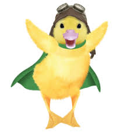
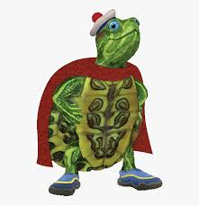
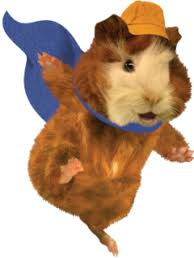

The Best Episode 1st Main Charecter 2nd Main Charecter 3rd Main Charecter Fun Facts
Wonder Pets is a children's television series created by Josh Selig about 3 classroom pets-- Linny the guinea pig, Tuck the turtle, and Ming-Ming the duckling who, while class is not in session, don an alter ego (the Wonder Pets) and go on missions to save animals in need, using teamwork to help them. Although Wonder Pets is a T.V. show intended for young children, this fanpage has been created for anyone who wishes to learn more about this facinating show.
  